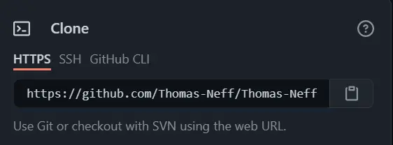
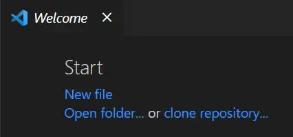
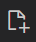

In this post, I'll show you how I developed and deployed this website in three steps.
Feel free to follow along and create your own website. It's fast, easy, and free!
Please note that these steps are written for Windows users.
If you're a seasoned developer, you can probably skip most of this section. But if your new to development, let's get you set up.
First, you will want to open (or download) an Integrated Development Environment (IDE). This is a fancy name for the software that will let you edit your code. Many developers use Visual Studio Code, and it's my tool of choice as well.
https://code.visualstudio.com/
Now it's time to install npm (originally Node Package Manager). In an effort to keep things simple, let's just say we'll use npm to download and install stuff.
If you want to understand npm a little better, check out this stack overflow post.
Next, install Git. Git will help us with version control, making it easy to push and pull changes from our command line.
Once you have everything installed, it's time to set up a code repository. For this example, we'll be using GitHub. Navigate to their website and set up an account, if you don't already have one. Then, follow the on-screen instructions to create a new repository.
You can look at my repository for this website as an example.
We want to make changes to the code in our online code repository (GitHub) using our local machine's IDE (Visual Studio Code). To do that, we need to clone the repository to our local machine.
Navigate to your repository in GitHub. Here is my repository for this website again as an example. Click on the green button that says "Code". It should look similar to the button below.
Copy the HTTPS link that appears. It should look similar to the screenshot below, but with your repository information.
Open Visual Studio Code. You should be greeted with a welcome screen that has a link to clone a repository.
Click on clone repository... and paste the link from GitHub. You will be prompted to save the repository somewhere on your PC.
Bootstrap is a front-end framework that helps to make your website responsive, ensuring your site will look great on various screen sizes. There are lots of ways to install Bootstrap, but let's take advantage of our shiny new package manager, npm.
Within Visual Studio Code, make sure you are in the folder where you
cloned your repository. Open the terminal using
Ctrl+Shift+`
or by clicking terminal > New Terminal in the top menu bar.
Within the terminal, verify npm installed correctly by writing the
command npm -v. You should get back a version number.
Now install Bootstrap using the command
npm install bootstrap --save.
For Bootstrap to work correctly, you will also need the JavaScript
library, jQuery. Install jQuery using the command
npm install jquery --save.
Our development environment is now set up! Here's a quick summary of everything we did:
Now let's move on to the fun part: developing.
Within Visual Studio Code, make sure you are in the folder where you cloned your repository. In the file explorer on the left-hand side, click on the symbol:  to add a file and name it index.html. This will be the homepage for your website. Next, copy and paste the following code into your index.html.
Author's note - need to fix css and js references to hit the correct files in the node_modules folder, as well as to not show entire filepath.